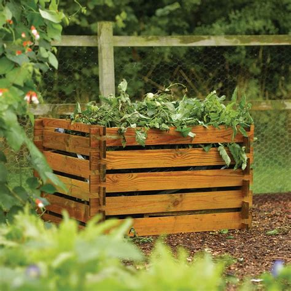
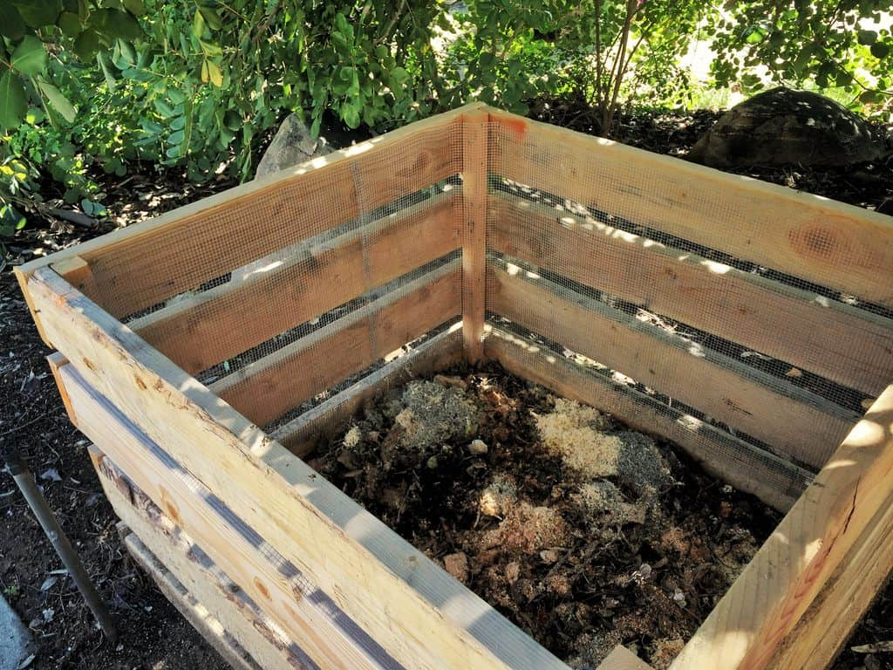

Compost is an easy way to reduce the amount of waste you contribute to landfill and to get rid of any food scraps leftover. Firstly, decide if you want to have an open or enclosed compost. An open compost will require an 1m x 1m patch of land in your garden. the patch will need to be slightly raised to allow for good drainage. This method of composting is the cheapest as it requires little supplies to maintain but the smell can waft and it can be a bit of a eyesore. An enclosed compost will require a bit of a splurge on a 50-200L (depending on amount of waste produced) airtight/waterproof compost bin. Look for a darker compost bin as it will help create a warmer compost environment leading to faster break down of produce!
Create your compost by layering dry leaves, grass trimmings or other organic material with newspaper, cardboard or paper scraps. This will absorb excess moisture from food waste and provide the right environment for worms to survive in. Then simply empty any food scraps or leftovers into your compost, remembering to add more dry materials when the compost gets dry. Your compost can take between 8 weeks to a year before it turns into mulch, the more attention you give your compost, the quicker you'll see these results! Using a hoe or a garden fork, be sure to mix your compost every couple of weeks to ensure even composting!
Many food scraps and organic base items can be saved from landfill and instead home-composted. Below is a compiled list of reccomended compost items for all Australian states:
If all of the above seems like too much effort, you can just dice up any vegetable/fruit scraps, dig a hole in your garden and fill in with your scraps. Even better if you dig these holes in your garden beds as these scraps will return nutrients to the soil and leave you with vibrant and healthy looking produce growing all year round!